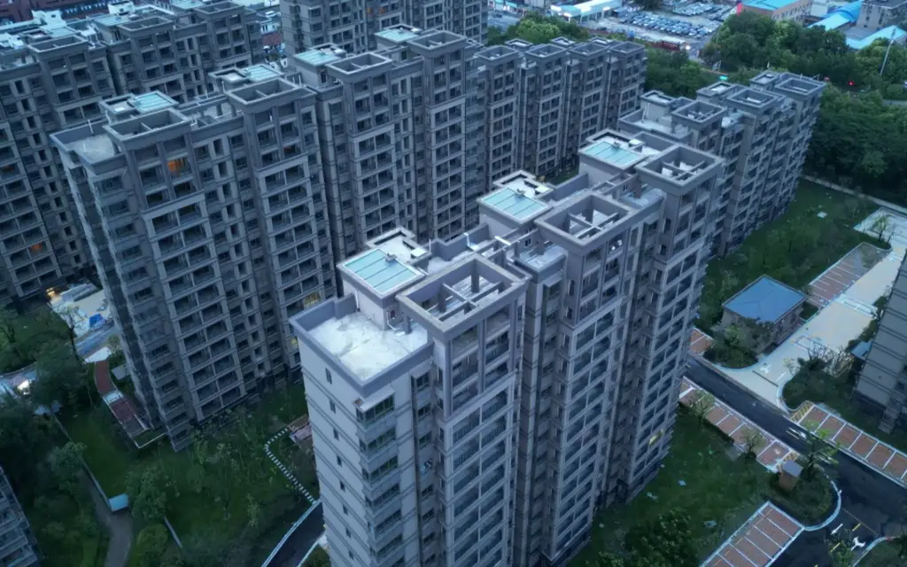
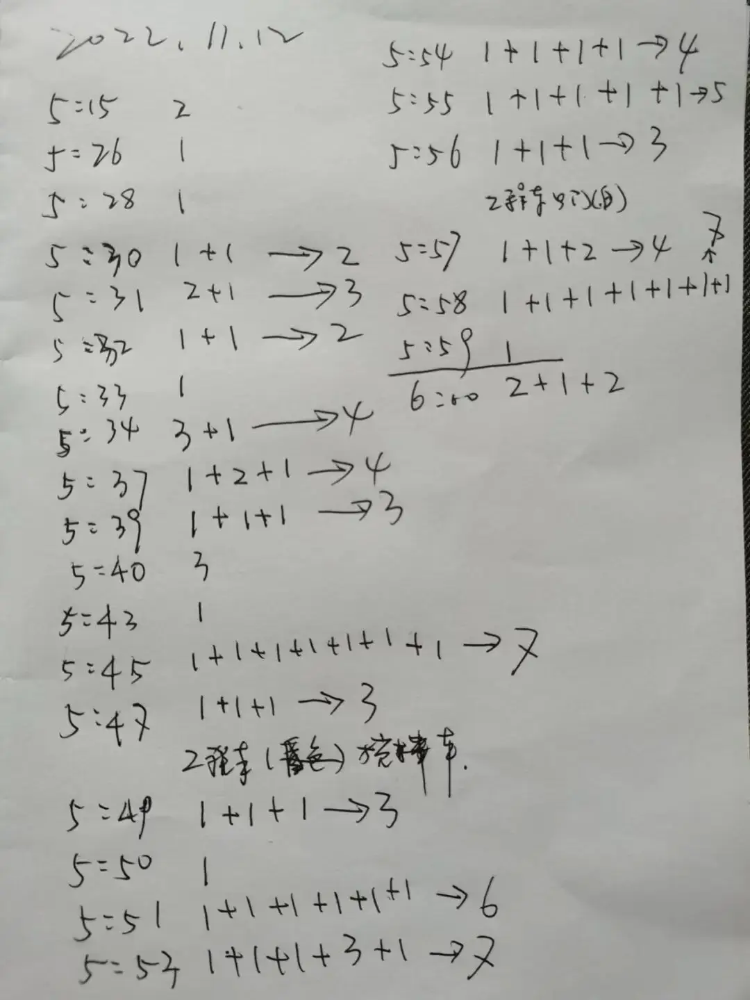
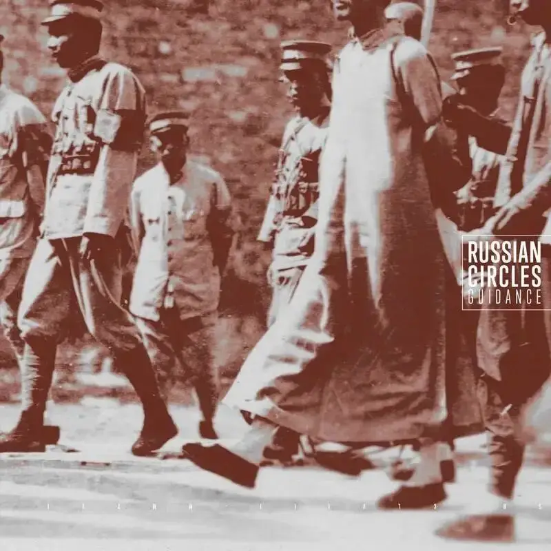

今年这个春节。
大家心里要踏实很多。
掏空六个口袋的房子，终于拿到了。
去年春节，大家还在为房子是不是会烂尾而焦虑。
还在担心春节后，工人能不能如期复工。

△上海宝山某楼盘，此项目于2021年3月份、2022年7月份分两批售卖，项目原计划2022年10月31日交房，但是项目于2021年11月停工，业主于2022年6月27日开始wq，历经474天，在宝山保交楼小组的帮助下，项目于2023年8月底交房，一共延期10个月。
现在，装修速度快的业主，已经可以在新房子里度过春节。
WQ一年半，我们收获的不仅只是一套房子。
还有作为当下时代语境里亲历者的实践与思考。
春节里，我们可以和亲戚朋友分享的东西，其实很多。
-01- 保持愤怒
2022年，当察觉到房子有烂尾风险的时候。
我义无反顾，选择以自愿者的方式参与其中。
内心深处，我很清楚，这是属于我自己的叛逆和表达方式。
这种叛逆的情绪，源自于一些事情的发生。
时间点，先回到四年前的2020年。
那一年，李医生吹哨，李医生被罚，最后李医生去世。
这是一件影响深远的悲剧。
是身处一线人民的声音，没有被重视、没有被聆听而导致的悲剧。
从此，李医生也成为了很多人的意难平。
我自己当时在参与一场针对疫情落难朋友的志愿者活动。
李医生最后的结局，也非常触痛我。
紧接着，是新疆的那把火。
又是一场非常可怕的悲剧。
那些同胞，最后声嘶力竭的哭喊声在大火中逐渐消逝，让我如鲠在喉。
2022年，我生活和工作的上海再一次发生了类似的事情。
那几个月的封闭，让人窒息，很多人的声音再一次被湮没。
这场巨大的打击，直到现在，上海还在消化。
看着自己喜爱的城市，走到这一步，让我心里非常不甘。
上海，可是那个最国际化、最开放包容的城市，怎么也可以这样。
为什么，就没有人在最开始重视人民的声音。
所以，伴随着这种情绪。
当我察觉到，我自己在上海的期房不对劲的时候。
我选择义无反顾的奔赴一线。
我想向大家证明。
人民有力量，人民的声音非常宝贵。
我们拥有组建自发社区的能力，我们也可以通过自主的努力，去为监管部门提供更多有力的信息、证据，甚至是建议。
我们用一年半的时间，证明了这一点。
我们重视我们的声音，我们群策群力，确保声音和信息的准确性，并勇敢发声。
我们也从未下跪，也没有想着等和靠。
我们曾用长达8个月每天数人头的数据，协助监管部门识破开发商欺上瞒下的手段。

我们曾用一封又一封的举报信，提醒监管部门及时介入。
最后，宝山保交楼小组，及时对监管资金进行了强监管，并帮助我们顺利拿到了房子.....
所以，社会的进步，很多时候，源自于一些人的愤怒和不满。
中国从来不缺少苟且和沉默，缺的是勇敢和主动发声。
所以，这是我们应该得到的第一个启发。
我们应该重视自己的声音，并且勇敢发声。
如果面对的问题非常棘手，我们需要形成社群，以群策群力、建设性的角度切入，来推进社会的进步。
-02- 不信任人，信任机制
在上世纪，在中国身处困局的时候。
鲁迅以文字救中国。
在他的笔下，非常深刻的揭露了当时中国一副“吃人”景象。
我们可以看到闰土怎么从机灵走向麻木，可以看到祥林嫂的一生怎么一步步走向凄凉。
鲁迅洞悉中国人的人性，深刻地批判了其中的丑陋、愚昧和奴性。
读懂鲁迅，我们就不应该对中国人的人性抱有希望。
当时，另一位大师胡适，则从另一个角度来寻求救国之法。
那就是更加重视机制。
他认为不存在不好的人，只存在不好的机制。
好的机制可以放大人性的善，约束人性的恶。
这两剂良药是我们常常需要思考的。
这也是我们大家WQ过程中一直可以比较团结的原因。
志愿者警惕个人的贪婪，也明白作为个体的软弱。
所以，大家会通过机制来规避这些风险。
比如对接事项时，坚持两人以上去对接，确保互相监督和补充。
重要事项，我们坚持信息公开，保障了信息的通畅，也可以及时获取大家的反馈。
再加上志愿者们的担当和付出，所以，大家比较团结。
未来，在没有了保交楼如此巨大共同利益的驱动下，业主们想要继续团结，维护自己的权益。
必须要争取选举出自己认可的业主代表，然后建立良好机制来进行日常运营，持续建设社区......
-03- 愿成为你的力量
现在，志愿者的使命已经完成。
这段时光也将逐渐远去。
我自己也很享受过去和志愿者们一起努力的时光。
我认为，最快乐的事，是能够和一群志同道合的人，专注完成一件事。
我想就是其中的一次。
在这个春节，我祝福志愿者们，在自己的工作和生活中一样能活出勇敢和自我。
喜欢什么、对什么感兴趣，那就努力去坚持和尝试，即使我们身处一个下坠的时代，我们一样可以活出精彩。
对于广大邻居，我代表志愿者，感谢大家的勇敢，祝福大家新春快乐。
未来，我们大家之间的互动将不会像过去两年那么频繁。
但愿，我们一起勇敢的两年，能成为你心底的力量。
在将来的一天，当你忽然想起这段时光，想起那群志愿者时，心里能够感受到温暖和力量。
也祝福，还未交房的其他楼盘业主继续坚持，任何努力，定有回响。

滑动下方
查看完整诗词
▼
这世代 Lyrics
这世代 - 李妍词：T-Rexx曲：李妍编曲：Tomy Ho/Logout Fan监制：Tomy Ho/Logout Fan/麦镟璧
写教条式的训话怎可了解我想法今天我怎去抑压你在意过吗这世代怎么抉择于低处怎去挣扎不选你的对等于我就错了吗
规则里避着差错天天沉闷地工作夜夜无谓地挥霍最美好的却未碰过总想过淡泊的过但亦能热烈的过
听听最内在最想渴望怎么过从追赶积分开始想都不去想开始不懂笑 开始只倍觉慌张通通关起了声响事事要退让自量但是并未去看明日哪样就望望旧日 未实践的话就尽力实现 实验那真假
志向太近 光阴很远未来有我 划过定界将教条一一拆下跨出了一套方格跨出我一套风格去踏过困厄这世代总可抉择于低处总会挣扎不选你的对等于我就错了吗总想过自订方向
被人拦下便心痒今天看自立的我你却狠批别乱妄想当天你是旧的我这想法你亦想过请知道代代有种渴望
何解于当天开始想都不去想开始不懂笑 开始只倍觉慌张通通关起了声响事事要退让自量但是并未去看明日哪样命运并未定局 任我选择别认为事事亦 受你检测志向太近 光阴很远
未来有我 突破定格你是你 我是我 经历可 一样么若然望陈旧桥段能明白我么
你是你 我是我 经历可 一样么别随便拿着遗憾来奚落隔阻将教条一一拆下推开你一切方格主宰我一切风格
你望见了吗这世代总可抉择于低处总会挣扎不需要给我惊讶我自有把握
- end -